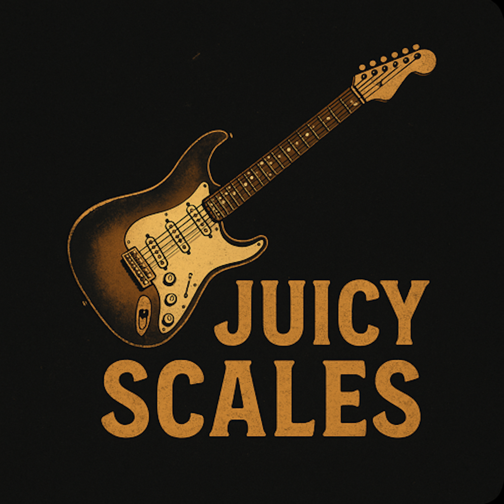

A full-neck scale reference for guitar and bass. Pick a key, pick a scale, start playing.
Download on the App StoreFeatures
Built for guitarists and bassists who want to look something up and get back to playing.
Two dedicated instrument views, each with a full interactive fretboard built for that instrument's range and tuning.
View any scale in positions 1 through 5, or show all notes across the entire neck at once. Shift up an octave anytime.
Dial in any key, scale, and tuning instantly. Standard, drop, open, and more. Pro unlocks the full scale and tuning library.
Toggle between interval names, note names, or plain dots so the fretboard shows exactly what you need.
Tap the Now Playing pill for a breakdown of the current scale: description, chord progressions transposed to your key, and a scale degrees table.
A tap-tempo metronome is always one tap away. Adjust BPM in increments of five without leaving the fretboard view.
Tap any string in the tuning column to mute or isolate it, so you can focus on exactly the strings you are working with.
Pro subscribers can personalize the wood type, color scheme, and metronome sound to match their setup.